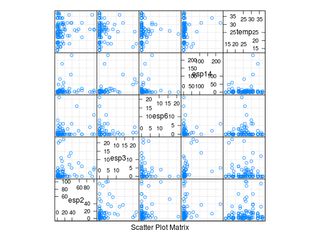

Dados de um experimento desenvolvido para estudar a distribuição do número de ácaros em placas de esterco de gado bovino no estado de São Paulo, obtidos por Paula e Tavares, 1992. Essas placas são depósitos de ovos da mosca do chifre (Haematobia irritans), uma das pragas mais importantes da pecuária brasileira. Os ácaros são inimigos naturais da mosca do chifre, uma vez que se alimentam de ovos e larvas dessas moscas.
Um data.frame com 102 observações e 8 variáveis.
esp2esp3esp6esp14placaposicregtempPAULA (2004), (Exemplo 5.2.8a, pág. 359)
Paula, G. A. e Tavares, H. R. (1992). Relatório de Análise Estatística sobre o Projeto: Ácaros Associados ao Esterco Bovino. Subsídios para Controle Biológico da Mosca do Chifre. RAECEA 9206, IME-USP
data(PaulaEg5.2.8a)#> Warning: data set ‘PaulaEg5.2.8a’ not foundstr(PaulaEg5.2.8a)#> 'data.frame': 102 obs. of 8 variables: #> $ esp2 : int 16 1 53 7 7 1 89 16 101 2 ... #> $ esp3 : int 3 0 0 0 1 0 2 0 5 3 ... #> $ esp6 : int 6 8 16 6 4 1 4 2 0 0 ... #> $ esp14: int 1 1 0 0 11 0 2 0 1 0 ... #> $ placa: Factor w/ 2 levels "1","6": 2 1 2 1 2 1 2 1 2 1 ... #> $ posic: Factor w/ 2 levels "central","lateral": 2 1 2 1 2 1 2 1 2 1 ... #> $ reg : Factor w/ 4 levels "São Roque","Pindamonhangaba",..: 1 1 1 1 1 1 1 1 1 1 ... #> $ temp : num 30 30 26 26 26 26 27 27 26.5 26.5 ...library(lattice) index <- sapply(PaulaEg5.2.8a, is.numeric) splom(PaulaEg5.2.8a[, index], type = c("p", "g"), lwd = 2, col.line = 1)